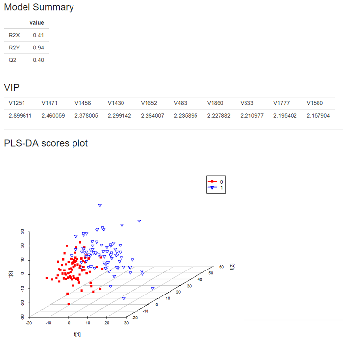

偏最小二乘判别分析（PLS-DA）与主成分分析不同，是一种有监督的学习方法，即在建模时用到分组标签的信息。在建立PLS-DA模型时，需要事先指定用于建模的主成分，不同的主成分数对应着不同的PLS-DA模型，一般按照一定的准则选取前面几个主成分建立PLS-DA模型。基于所建立的PLS-DA模型，可计算衡量对模型贡献大小的VIP值。近年来，PLS-DA方法在代谢组学研究中得到了广泛的应用，并成为一种标准的高维数据分析方法。代谢组学中常利用VIP值进行变量筛选，如VIP>1。
二、数据格式

1、数据格式为“.csv”
2、数据变量名必须为英文、阿拉伯数字或下划线的组合
3、自变量列数可以输入多列，以英文状态下的逗号或冒号分隔，如：2,3,4或2:4
示例如下：
